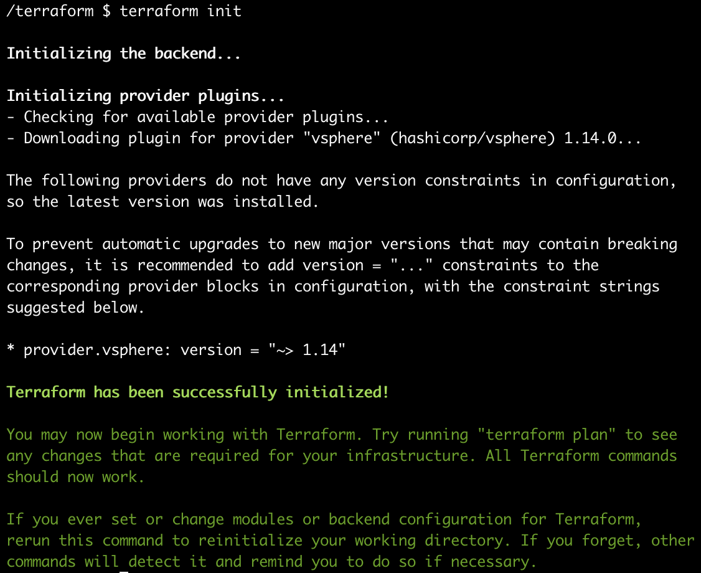
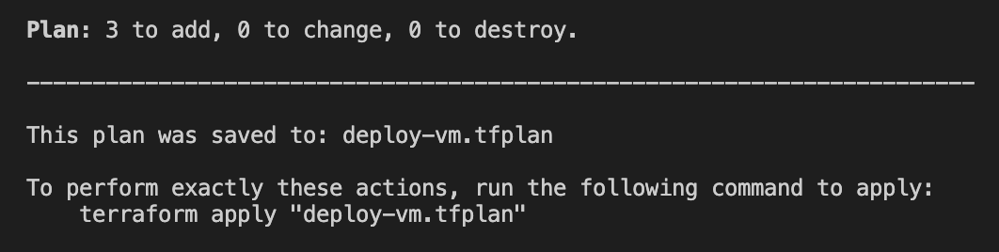
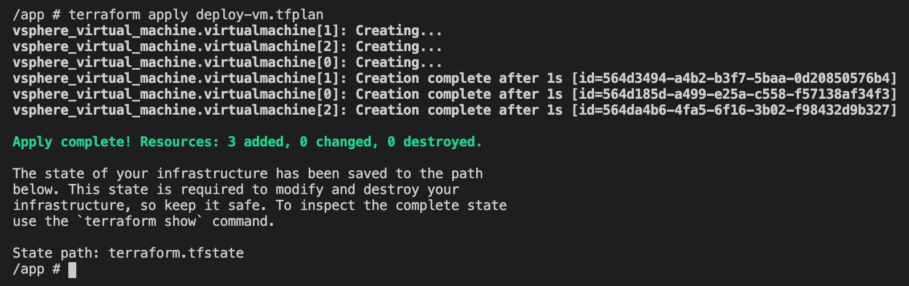

Criando VM’s no VMware ESXi com Terraform
No Brasil ainda temos muitas empresas com o modelo tradicional de infraestrutura, com seus datacenters próprios ou no modelo de comodato em datacenters compartilhados, com isso é comum ver parques de servidores usando virtualizadores para aproveitar melhor os recursos disponíveis.
Muitos sysadmins ainda usam a forma tradicional de criar novas máquinas, utilizam o dashboard web seguindo o wizard e com isso tomando muito tempo para concluir esse processo.
Os virtualizadores mais modernos hoje em dia como o VMware ESXi disponibilizam API’s que podemos utilizar para automatizar o processo de criação de máquinas virtuais ou qualquer recurso disponível. Hoje a ferramenta mais utilizada para automatizar a criação desses recursos é Terraform.
Requisitos
- Servidor VMware ESXi
- Usuário com perfil administrativo
OBS: Para utilizar a API do ESXi é preciso ter um servidor licenciado ou com a licença trial de 60 dias. Você pode utilizar a versão Free mas não da acesso á API. - Terraform
Instalação do Terraform
O Terraform está disponível para Windows Linux e macOS. A documentação da Hashicorp é muito boa, então vou deixar abaixo as informações da documentação para fazer a instalação.
Clique na imagem abaixo.
Terraform init
Com o terraform instalado, precisamos inicializar o terraform com o provider vSphere para acesso ao ESXi, para isso precisamos criar o diretório dos arquivos terraform. O primeiro arquivo terraform que precisa ser criado é o que contém as informações do provider que vamos usar. O arquivo pode ter qualquer nome desde que tenha a extensão .tf, aqui vou chamar de provider.tf
provider "vsphere" {
vsphere_server = "HOST"
user = "USUARIO"
password = "SENHA"
allow_unverified_ssl = true
}
Com o arquivo criado, é preciso inicializar o terraform para que ele baixe o provider do vSphere.
">
Arquivos Terraform
vars.tf
É preciso configurar algumas variáveis para que o terraform consiga se comunicar com os recursos do ESXi e também para que as máquinas virtuais sejam criadas corretamente.
variable "data_center" {
default = "ha-datacenter"
}
variable "data_store" {
default = "data-vol-1"
}
variable "mgmt_lan" {
default = "VM Network"
}
variable "net_adapter_type" {
default = "vmxnet3"
}
variable "guest_id" {
default = "centos7_64Guest"
}
variable "custom_iso_path" {
default = "iso/centos7-custom-img-disk50gb-v0.0.3.iso"
}
variable "name_new_vm" {
description = "Input a name for Virtual Machine Ex. new_vm"
}
variable "vm_count" {
description = "Number of instaces"
}
variable "disk_size" {
description = "Amount of Disk, Ex. 50, 60, 70 OBS: The amount may not be less than 50"
}
variable "num_cpus" {
description = "Amount of vCPU’s, Ex. 2"
}
variable "num_mem" {
description = "Amount of Memory, Ex. 1024, 2048, 3073, 4096"
}
instance.tf
Aqui a mágica acontece, nesse arquivo vamos colocar os recursos para criação das máquinas virtuais.
data "vsphere_datacenter" "datacenter" {
name = var.data_center
}
data "vsphere_datastore" "datastore" {
name = var.data_store
datacenter_id = data.vsphere_datacenter.datacenter.id
}
data "vsphere_resource_pool" "pool" {}
data "vsphere_network" "networking" {
name = var.mgmt_lan
datacenter_id = data.vsphere_datacenter.datacenter.id
}
resource "vsphere_virtual_machine" "virtualmachine" {
count = var.vm_count
name = "${var.name_new_vm}-${count.index + 1}"
resource_pool_id = data.vsphere_resource_pool.pool.id
datastore_id = data.vsphere_datastore.datastore.id
force_power_off = true
shutdown_wait_timeout = 1
num_cpus = var.num_cpus
memory = var.num_mem
wait_for_guest_net_timeout = 0
guest_id = var.guest_id
nested_hv_enabled = true
network_interface {
network_id = data.vsphere_network.networking.id
adapter_type = var.net_adapter_type
}
cdrom {
datastore_id = data.vsphere_datastore.datastore.id
path = var.custom_iso_path
}
disk {
size = var.disk_size
label = "first-disk.vmdk"
eagerly_scrub = false
thin_provisioned = true
}
}
Resources
- vsphere_datacenter: Nome do datacenter que foi configurado dentro do vCenter/vSphere, por padrão o nome que vem configurado é ha-datacenter, esse informação você consegue na cli do ESXi.
- vsphere_datastore: storage/compartilhamento onde serão provisionados os arquivos e discos das máquinas virtuais que serão criadas.
- vsphere_resource_pool: Pool de recursos criado para as máquinas virtuais.
- vsphere_network: Nome da network que as máquinas virtuais usarão para ter comunição com a rede interna e externa do seu datacenter.
- vsphere_virtual_machine: Cria de fato as máquinas virtuais, aqui fica especificado como as máquinas serão criadas. Os pontos relevantes nesse resource é a quantidade de máquinas, nome, quantidade de vCPU, memória, disco, network utilizada pela vm e o tipo de instalação que será utilizado para criar a máquina, nesse exemplo estou utilizando uma ISO customizada e automatizada.
Essas informações estão de forma customizada no arquivo vars.tf, com isso no momento do planejamento do provisionamento com terraform um questionário será solicitado, abaixo segue o exemplo.
terraform plan
Com os arquivos configurados podemos criar o plano de execução do terraform. Um recurso muito legal que o terraform oferece é de entrada de dados, a forma como as varáveis foram configuradas no arquivo vars.tf permite criar esse questionário para passar as informações necessárias para criação da(s) máquinas virtuais como disco, memória, vcpu, nome e quantidade.
~]$ terraform plan --out deploy-vm.tfplan
">
Ao final do plan ele mostra a quantidade de recursos será criado, no exemplo serão 3 máquinas virtuais. Definido o plan, é só aplicar as configurações para que os recursos sejam criados
terraform apply
~]$ terraform apply deploy-vm.tfplan
">
Demo

Conclusão
A intenção do artigo é mostrar uma das muitas formas de se automatizar a infraestrutura tradicional que ainda existe no cenário das empresas brasileiras. O “boom” dos provedores de Cloud ainda é recente e as empresas estão migrando com bastante cautela e muitas ainda estão planejando a migração, então, isso leva tempo e mesmo assim as empresas não param de crescer e aumentar a demanda dos produtos oferecidos. A administração de sistemas tradicional existe mas com automação ela deve ser mais eficiente para acompanhar esse constante crescimento.
Referências
Github: Arquivos utilizados
Terraform: Documentação